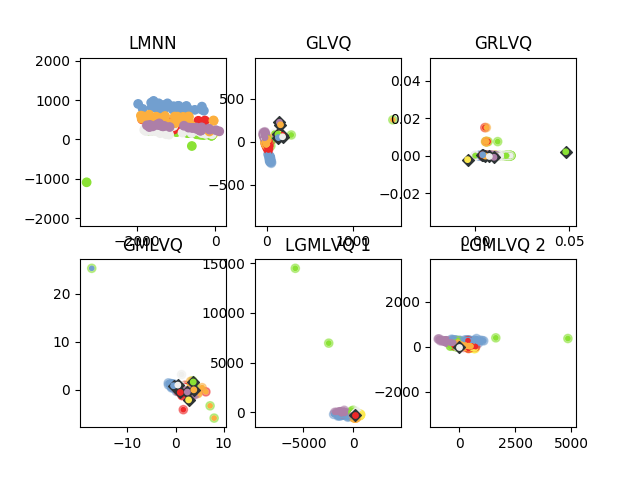

GLVQ Benchmark¶
This example shows the differences between the 4 different GLVQ implementations and LMNN. The Image Segmentation dataset is used for training and test. Each plot shows the projection and classification from each implementation. Because Glvq can’t project the data on its own a PCA is used.
Out:
('variance coverd by projection:', 95.995378425856046)
('variance coverd by projection:', 99.200028708447789)
from __future__ import with_statement
import numpy as np
import matplotlib.pyplot as plt
from metric_learn import LMNN
from sklearn.decomposition import PCA
from glvq import GlvqModel, GrlvqModel, LgmlvqModel, GmlvqModel
from glvq.plot_2d import to_tango_colors, tango_color
print(__doc__)
def plot(data, target, target_p, prototype, prototype_label, p):
p.scatter(data[:, 0], data[:, 1], c=to_tango_colors(target, 0), alpha=0.5)
p.scatter(data[:, 0], data[:, 1], c=to_tango_colors(target_p, 0),
marker='.')
p.scatter(prototype[:, 0], prototype[:, 1],
c=tango_color('aluminium', 5), marker='D')
try:
p.scatter(prototype[:, 0], prototype[:, 1], s=60,
c=to_tango_colors(prototype_label, 0), marker='.')
except:
p.scatter(prototype[:, 0], prototype[:, 1], s=60,
c=tango_color(prototype_label), marker='.')
p.axis('equal')
y = []
x = []
with open('segmentation.data') as f:
for line in f:
v = line.split(',')
y.append(v[0])
x.append(v[1:])
x = np.asarray(x, dtype='float64')
y = np.asarray(y)
lmnn = LMNN(k=5, learn_rate=1e-6)
lmnn.fit(x, y)
x_t = lmnn.transform(x)
p1 = plt.subplot(231)
p1.scatter(x_t[:, 0], x_t[:, 1], c=to_tango_colors(y, 0))
p1.axis('equal')
p1.set_title('LMNN')
# GLVQ
glvq = GlvqModel()
glvq.fit(x, y)
p2 = plt.subplot(232)
p2.set_title('GLVQ')
plot(PCA().fit_transform(x), y, glvq.predict(x), glvq.w_, glvq.c_w_, p2)
# GRLVQ
grlvq = GrlvqModel()
grlvq.fit(x, y)
p3 = plt.subplot(233)
p3.set_title('GRLVQ')
plot(grlvq.project(x, 2),
y, grlvq.predict(x), grlvq.project(grlvq.w_, 2),
grlvq.c_w_, p3)
# GMLVQ
gmlvq = GmlvqModel()
gmlvq.fit(x, y)
p4 = plt.subplot(234)
p4.set_title('GMLVQ')
plot(gmlvq.project(x, 2),
y, gmlvq.predict(x), gmlvq.project(gmlvq.w_, 2),
gmlvq.c_w_, p4)
# LGMLVQ
lgmlvq = LgmlvqModel()
lgmlvq.fit(x, y)
p5 = plt.subplot(235)
elem_set = list(set(lgmlvq.c_w_))
p5.set_title('LGMLVQ 1')
plot(lgmlvq.project(x, 1, 2, True),
y, lgmlvq.predict(x), lgmlvq.project(np.array([lgmlvq.w_[1]]), 1, 2),
elem_set.index(lgmlvq.c_w_[1]), p5)
p6 = plt.subplot(236)
p6.set_title('LGMLVQ 2')
plot(lgmlvq.project(x, 6, 2, True),
y, lgmlvq.predict(x), lgmlvq.project(np.array([lgmlvq.w_[6]]), 6, 2),
elem_set.index(lgmlvq.c_w_[6]), p6)
plt.show()
Total running time of the script: ( 0 minutes 20.678 seconds)